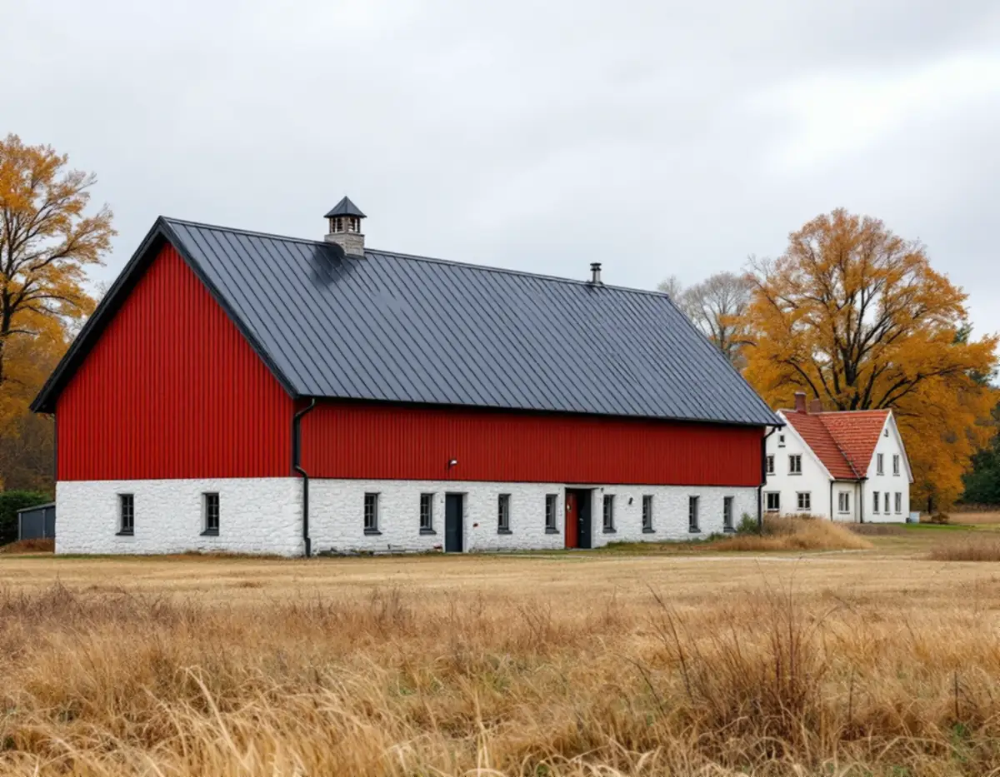
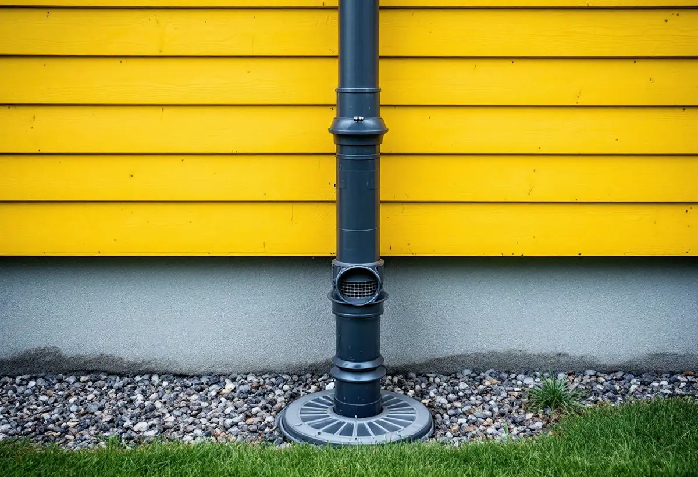

Platsbesök
Vi går igenom tak, rännor och beslag och ser om fastigheten ligger i ett utpekat kulturmiljöområde.
Sigtuna kommun har drygt 7 500 bostäder i småhus enligt SCB, från villorna i Märsta och Rosersberg till gårdarna i dalgången mellan Odensala och Hova. På landsbygden har kommunen skrivit egna råd om när plåt passar och hur den bör se ut. Geal Entreprenad AB lägger plåttak, byter rännor och stuprör och monterar beslag i Sigtuna kommun, med gratis platsbesök och skriftligt kostnadsförslag.

Bygg- och trafiknämnden antog i december 2020 riktlinjer för bebyggelseutveckling i dalgången mellan Odensala och Hova. Där beskrivs husen som präglar landskapet: parstugor med rödfärgad locklistpanel och sadeltak täckta med lertegel, sekelskiftesvillor med lertegeltäckta sadeltak som ibland är brutna, och mindre bostadshus på gårdarna med rödfärgad fasad och tegeltak.
De större ekonomibyggnaderna har enligt riktlinjerna ofta en vitputsad ladugårdsdel, fasader av rödfärgad träpanel och sadeltak täckta med tegel eller korrugerad plåt. I inventeringen av enskilda gårdar nämns också en jordkällare med plåttak. Plåten finns alltså redan i dalgången, men främst på byggnader för djur, redskap och förvaring.
På bostadshusen är riktlinjerna försiktigare. Kommunen konstaterar att plåt och plast ofta är oförenliga med äldre naturmaterial och skriver: låt trähus förbli trähus. Plåt som fasadmaterial står sig enligt riktlinjerna inte i tiden, är svår att få fin runt fönster och dörrar, blir lätt repig och bucklig och är svår att byta ut. Vi tar med de råden när vi föreslår material till ett äldre hus, och använder plåten där den hör hemma: på taket, i rännorna och i beslagen.

Riktlinjerna konstaterar att byggnader för lantbrukets behov är bygglovsbefriade, och att kommunen därför inte kan ställa krav på anpassning till kulturmiljön för lador och liknande byggnader. Rekommendationen till lantbrukaren är ändå att följa riktlinjerna så långt det går med hänsyn till lantbrukets behov.
Hästverksamhet och ridning räknas enligt riktlinjerna som fritidsverksamhet, och då krävs bygglov för stall. För stall och andra större byggnader för fritidsändamål anger kommunen att huset ska ha sadeltak med en takvinkel på inte lägre än cirka 30 grader, och att takbeläggningen bör vara lertegel. Används plåt i stället ska den upplevas matt på avstånd, och svart kulör är då ofta bättre än en klar orange ton. Väggfärgen bör vara matt, särskilt om väggen är klädd med plåt.
Plåt finns i många ytbeläggningar och glansgrader, och skillnaden syns tydligt i ett öppet landskap. Vi tar fram kulörprover och matta alternativ innan något beställs, så att du kan jämföra dem mot kommunens råd och mot gårdens övriga byggnader.
Sigtuna Vatten & Renhållning skriver att dagvattenledningsnätet i kommunen är ungefär 120 kilometer långt, att det finns en dagvattentunnel på nära 4 kilometer och drygt 20 anläggningar för fördröjning och sedimentering, och att allt dagvatten rinner med självfall. Vid all nybyggnation eftersträvas lokalt omhändertagande på fastigheten.
Broschyren Dagvatten på din fastighet, som bolaget länkar till, ger råd som rör stupröret direkt. Leds takvatten till ett magasin eller en stenkista ska det först rensas från löv med en lövsil på stupröret, och silen ska tömmas regelbundet. Anläggningen ska ha ett bräddavlopp för stora regn, och hålrumsvolymen bör motsvara minst 10 millimeter av det regn som faller på tak och hårdgjorda ytor. Den bör kunna rensas och spolas ur, vanligtvis vart tionde år.
Har du en regnvattentunna bör den enligt broschyren ha ett överfyllnadsskydd, så att överskottet leds ut på gräsmattan i stället för mot grunden. Vi monterar lövsil och stuprörsdelar så att de går att nå och rengöra, och leder överskottet bort från huset. Om takets skick i stort läser du under takrenovering i Sigtuna.
Ska du byta takmaterial, till exempel från tegel till plåt, kan du enligt Sigtuna kommun behöva bygglov beroende på var byggnaden ligger och om den är kulturhistoriskt värdefull. Kommunen erbjuder också frivilligt bygglov, så att du kan få beskedet att åtgärden uppfyller lagens krav innan arbetet börjar. Beslut ska komma inom tio veckor från att ansökan är komplett.
Broschyren om dagvatten påminner om en sak som ofta glöms: lämna in ritningar över den nya VA-anläggningen till bygglovsarkivet, även när ändringen inte kräver bygglov. Det hjälper nästa ägare att hitta stenkistor och ledningar. Mer om plåtarbeten i allmänhet finns på sidan plåtslagare.
Vi går igenom tak, rännor och beslag och ser om fastigheten ligger i ett utpekat kulturmiljöområde.
På gårdar och stall tar vi fram matta kulörprover att jämföra mot kommunens riktlinjer.
Plåttak, rännor, stuprör och lövsilar redovisas som egna poster.
Gammal plåt tas ner och ny plåt monteras med rätt fall och åtkomliga silar.
Vi visar var vattnet leds och hur silar och avledare rensas.
Skatteverket räknar det som rotarbete att reparera, rengöra eller byta ut plåttak, hängrännor och stuprör på ett småhus, och att montera ställning i samband med arbetet. Arbetet ska utföras i bostaden eller på tomten i nära anslutning till den.
Avdraget är 30 procent av arbetskostnaden, högst 50 000 kr per person och år och högst 75 000 kr tillsammans med rutavdrag. Geal drar avdraget direkt på fakturan.
Takytan och lutningen, valet av plåt, profil och kulör, antalet rännor och stuprör, om lövsilar och avledare ska monteras och hur hög byggnaden är. En stor ladugård kräver annan ställning än en villa. Efter ett gratis platsbesök får du ett skriftligt kostnadsförslag.
Plåttak, hängrännor och beslag.
Plåtslagare i Stockholm →Takbyte, takbesiktning och plåtarbeten.
Takläggare i Sigtuna →Sigtuna stad, Märsta och Arlanda.
Takrenovering i Sigtuna →Anmälan, fläkt och dusch i stället för badkar.
Badrumsrenovering i Sigtuna →Nytt hus, gästhus och större tomt.
Byggföretag i Sigtuna →Puts i stadskärnan, panel i dalgången.
Fasadrenovering i Sigtuna →Arlanda, ljudisolering och fönster i Sigtuna.
Fönsterbyte i Sigtuna →Bevarandeplanen, gammalt glas och fönsterkulörer.
Fönsterrenovering i Sigtuna →Golv på platta, fuktmätning och radon.
Golvläggare i Sigtuna →Stadskärnan, Märsta och Rosersberg.
Målare i Sigtuna →Staket, dörrar och gårdshus i stad och dalgång.
Snickare i Sigtuna →